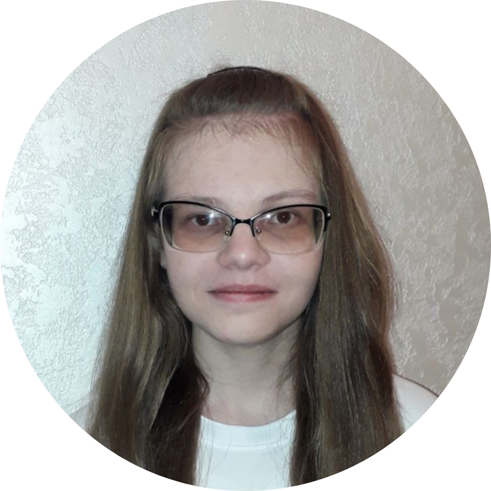
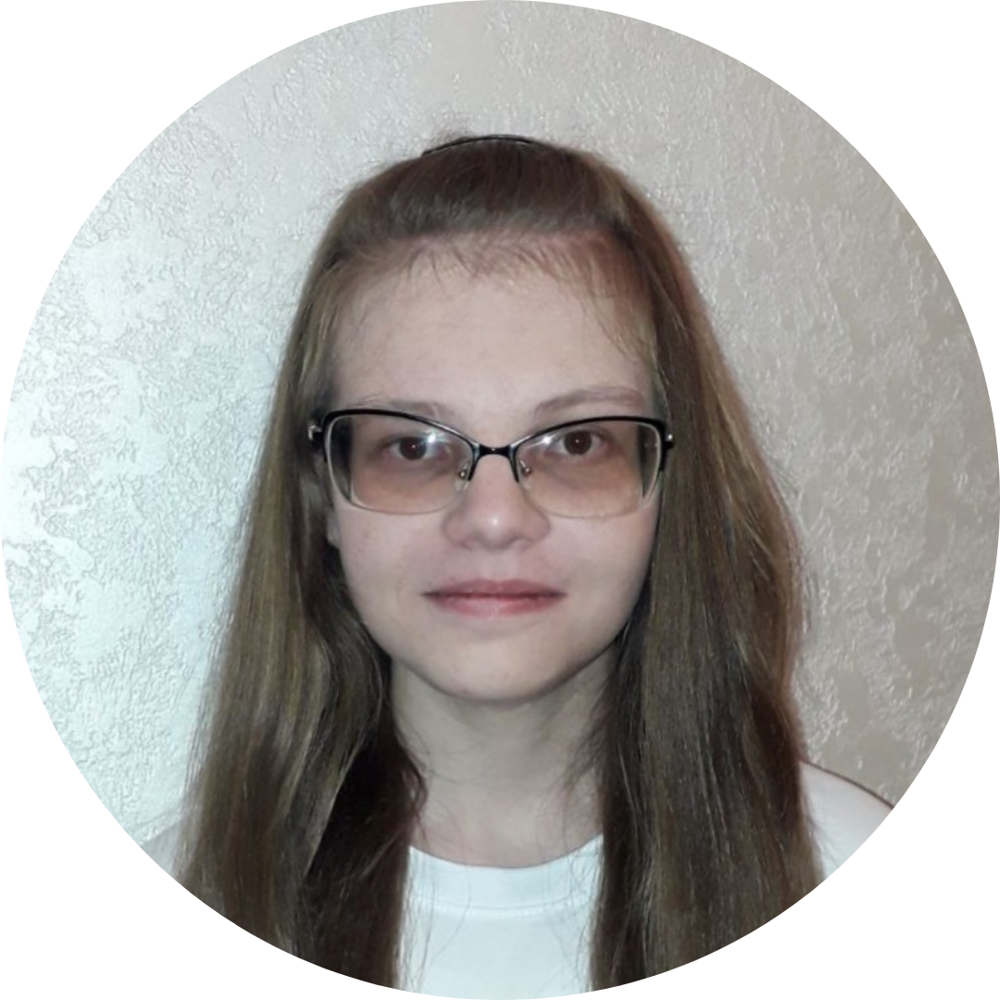

I'm Daria, a first-year MIT student from Ukraine intending to major in AI and minor in Linguistics. I am excited by computer science, machine learning, linguistics, and languages, being especially enthusiastic about NLP as a field where computer science and linguistics meet.
In high school, I represented Ukraine at the International Linguistics Olympiad. The olympiad experience taught me to think outside the box of my native language and culture and to look for non-trivial, creative problem solutions. I still support the linguistics olympiad community by authoring and testing competition problems.
In my free time, I love to explore foreign languages. Currently, I'm fluent in German and know several more at an elementary level (e.g. Hungarian, Mandarin Chinese, or even chiShona).
And yes, I can write backwards with my left hand!
A CV is available here.